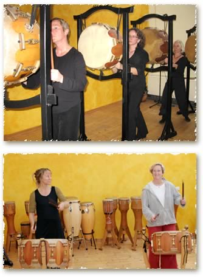

Unterricht
Buk - Taiko- asiatische Krafttrommel
Die Buk ist eine alte asiatische Trommelform, die von China nach Korea gelangte, wo sie in Zen Klöstern gespielt wurde. Von dort aus kam sie nach Japan, wo sich die Spielform des Taiko entwickelte. Im Unterricht wird eine Spielweise vermittelt, die japanische und koreanische Stilrichtungen verbindet. Der ganze Körper wird dabei in den "Tanz an der Trommel" einbezogen. Zentrierende Bewegungen, verwandt mit denen der asiatischen Kampfkünste, verbinden sich dabei mit pulsierendem Spiel auf der asiatischen Faßtrommel.
Verschiedene Spielweisen sind möglich:
- die Trommel hängt vor dem Spielenden in einem Ständer und ist somit ein direktes Gegenüber. Thema: die Trommel als Spiegel, Zentrierung, Meditation.
- sie liegt horizontal in einem Ständer (japanische Spielweise) Thema: Spiel aus der Körpermitte, Offenheit und Kontakt.
- Sambuk – das Spiel auf mehreren, unterschiedlich gestimmten Trommeln. Neue Bewegungsachsen kommen ins Spiel. Thema: Tanz an der Trommel, flexibles, energetisierendes Spiel.
Anfänger
Wir stimmen uns ein mit zentrierenden Bewegungsübungen und üben uns im Spielfluß und der Spieltechnik mit den chés (Holzsticks). Kraftvolle große Bewegungen wechseln mit feineren, schneller gespielten Rhythmen auf der Trommel ab. Beim Spiel der ersten japanischen Rhythmen kannst du die kraftvolle Energie der Trommel und deiner Bewegungen genießen.
Weiterführung
Die Spieltechnik und grundlegende Bewegungformen an der Trommel sind den SpielerInnen vertraut. Wir arbeiten an rhythmischer Präzision im Spiel, Tempo und Koordination. Im dynamischen Spiel mit Spannung und Lösung, laut und leise, großen und kleinen Bewegungen entsteht ein energetisierendes Kraftfeld. Die Stücke, die in den Workshops erspielt werden, sind teils traditionellen Ursprungs, andernteils selbst komponiert.
